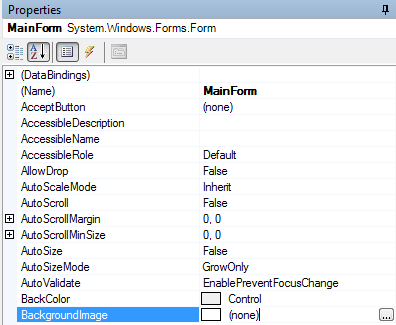
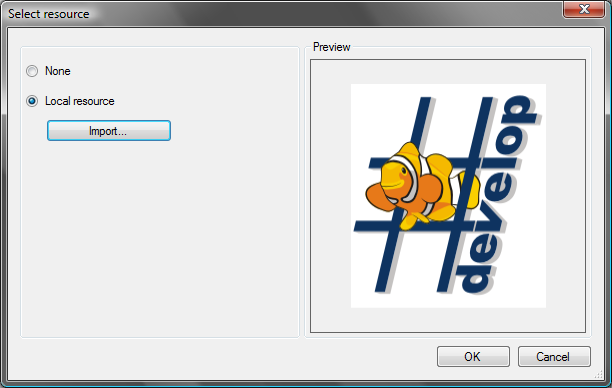
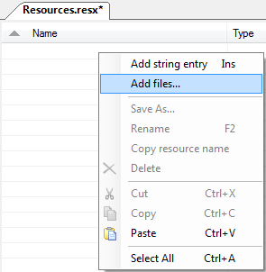

Getting an IronPython WinForm to display an icon or image can be done in different ways. Here we will take a look at the following ways to add a background image to the main form of an IronPython WinForms application.
The SharpDevelop forms designer can be used to add resources to a form in the same way for other languages such as C# or VB.NET. It supports adding local form resources but not project resources currently.
After creating a new IronPython Windows Application, open the MainForm in the designer. In the Properties window select the BackgroundImage property of the MainForm and click the browse button.

Select Local Resource then click the Import button to browse to the image file you are going to use.

Click OK to close the dialog. The background image should then be displayed in the form. If you select Run from the Debug menu your application will be compiled and the main form should be displayed with your image.
Now let us take a look at the code generated for the form.
import System.Drawing
import System.Windows.Forms
from System.Drawing import *
from System.Windows.Forms import *
class MainForm(Form):
def __init__(self):
self.InitializeComponent()
def InitializeComponent(self):
resources = System.Resources.ResourceManager("PythonWinApp.MainForm", System.Reflection.Assembly.GetEntryAssembly())
self.SuspendLayout()
#
# MainForm
#
self.BackgroundImage = resources.GetObject("$this.BackgroundImage")
self.ClientSize = System.Drawing.Size(284, 264)
self.Name = "MainForm"
self.ResumeLayout(False)
The generated code for the InitializeComponent method is nearly the same as the code generated by the forms designer when adding a resource to a C# form. The generated C# code is shown below.
private void InitializeComponent()
{
System.ComponentModel.ComponentResourceManager resources = new System.ComponentModel.ComponentResourceManager(typeof(MainForm));
this.SuspendLayout();
//
// MainForm
//
this.AutoScaleDimensions = new System.Drawing.SizeF(6F, 13F);
this.AutoScaleMode = System.Windows.Forms.AutoScaleMode.Font;
this.BackgroundImage = ((System.Drawing.Image)(resources.GetObject("$this.BackgroundImage")));
this.ClientSize = new System.Drawing.Size(284, 264);
this.Name = "MainForm";
this.Text = "WinApp";
this.ResumeLayout(false);
}
The C# form uses the ComponentResourceManager class and typeof(MainForm) to get access to the embedded resource. The IronPython form uses the ResourceManager class instead. If we try to use a ComponentResourceManager in the IronPython application by replacing the resources line with:
resources = System.ComponentModel.ComponentResourceManager(clr.GetClrType(MainForm))
The application will throw an NotSupportedException when it is run with an error message saying that "The invoked member is not supported in a dynamic assembly.". The line of code that actually causes this error is the resources.GetObject() line. So we cannot read a resource from a dynamic assembly, but even if we could the resources are not actually embedded in the assembly that contains the code for the MainForm. When the IronPython application is compiled two files are generated an executable and a dll. The dll is generated using IronPython's ClrModule.CompileModules which is used to compile all the IronPython code into an assembly. The exe is generated using several Reflection.Emit calls and its only task is to call PythonOps.InitializeModule passing the filename of the generated dll. If you look at the exe using Reflector you can see a PythonMain class with a Main method similar to that shown below.
[STAThread]
public static int Main()
{
string[] references = new string[] { "IronPython, Version=2.0.0.0, Culture=neutral, PublicKeyToken=31bf3856ad364e35",
"mscorlib, Version=2.0.0.0, Culture=neutral, PublicKeyToken=b77a5c561934e089",
"System.Data, Version=2.0.0.0, Culture=neutral, PublicKeyToken=b77a5c561934e089",
"System, Version=2.0.0.0, Culture=neutral, PublicKeyToken=b77a5c561934e089", "System.Drawing, Version=2.0.0.0, Culture=neutral, PublicKeyToken=b03f5f7f11d50a3a",
"System.Windows.Forms, Version=2.0.0.0, Culture=neutral, PublicKeyToken=b77a5c561934e089",
"System.Xml, Version=2.0.0.0, Culture=neutral, PublicKeyToken=b77a5c561934e089" };
return PythonOps.InitializeModule(Assembly.LoadFile(Path.GetFullPath("PythonWinApp.dll")), "Program", references);
}
With Reflector you can also see that the form resources are embedded into the executable and not the dll. So this means our form code needs to load the resources from the executable. This is done in the generated form designer code by passing the entry assembly, which will be the executable containing the resources, to the ResourceManager as shown below.
resources = System.Resources.ResourceManager("PythonWinApp.MainForm", System.Reflection.Assembly.GetEntryAssembly())
The above code will not work if you try to run your application with the IronPython Console (ipy.exe) since the entry assembly will actually be ipy.exe. The following sections will look at using form resources that can be used when running your code with ipy.exe.
Here we will have two projects, one with the IronPython form and one with the image resource. In the resource project you have a choice of whether you are going to put your image inside a resource file (.resx) or simply add it to the project and set its Build Action to EmbeddedResource. For now let us add the image to a resource file. Add a new resource file and then open it into the editor. Add your image to the resource file by right clicking and selecting Add files...

Finally compile your resource assembly.
From your IronPython WinForms project you can load the image from this resource assembly with code similar to the following:
class MainForm(Form):
def __init__(self):
self.InitializeComponent()
fileName = System.IO.Path.GetFullPath("Resources\\ResourceLibrary.dll")
assembly = System.Reflection.Assembly.LoadFile(fileName)
resources = System.Resources.ResourceManager("ResourceLibrary.Resources", assembly)
self.BackgroundImage = resources.GetObject("SharpDevelop")
def InitializeComponent(self):
pass
The code loads the resource assembly (ResourceLibrary.dll) by assuming it is in the Resources subfolder off the current working directory. The name of the embedded resource and the loaded assembly are then passed to the ResourceManager. Finally the SharpDevelop image is read from the resource manager via the GetObject method. This code will work with both ipy.exe and when the application is compiled but it uses the current working directory is used to determine the location of the resource assembly. An improvement is to use a path relative to the MainForm.py file itself.
class MainForm(Form):
def __init__(self):
self.InitializeComponent()
directoryName = System.IO.Path.GetDirectoryName(__file__)
fileName = System.IO.Path.Combine(directoryName, "Resources\ResourceLibrary.dll")
assembly = System.Reflection.Assembly.LoadFile(fileName)
resources = System.Resources.ResourceManager("ResourceLibrary.Resources", assembly)
self.BackgroundImage = resources.GetObject("SharpDevelop")
def InitializeComponent(self):
pass
With this modified code we get the full filename including its path to the MainForm.py file by using the __file__ constant. Then we can get the full path to the resource assembly relative to the MainForm.py file. This code will work with ipy.exe but not if the application is compiled. With the compiled application the __file__ constant returns the name of the file without its extension and without any path information.
Here we assume the image (SharpDevelop.png) is in a Resources subfolder relative to the MainForm.py file.
class MainForm(Form): def __init__(self): self.InitializeComponent() directoryName = System.IO.Path.GetDirectoryName(__file__) fileName = System.IO.Path.Combine(directoryName, "Resources\\SharpDevelop.png") self.BackgroundImage = System.Drawing.Bitmap(fileName) def InitializeComponent(self): pass
Here the code simply determines the full path to the image and then loads it into a Bitmap. The Bitmap is then used to set the form's background image. Again this code will work with ipy.exe but not if the application is compiled.
Example code for all the ways of using resources in IronPython can be found in the IronPythonFormResourceExamples.zip file.